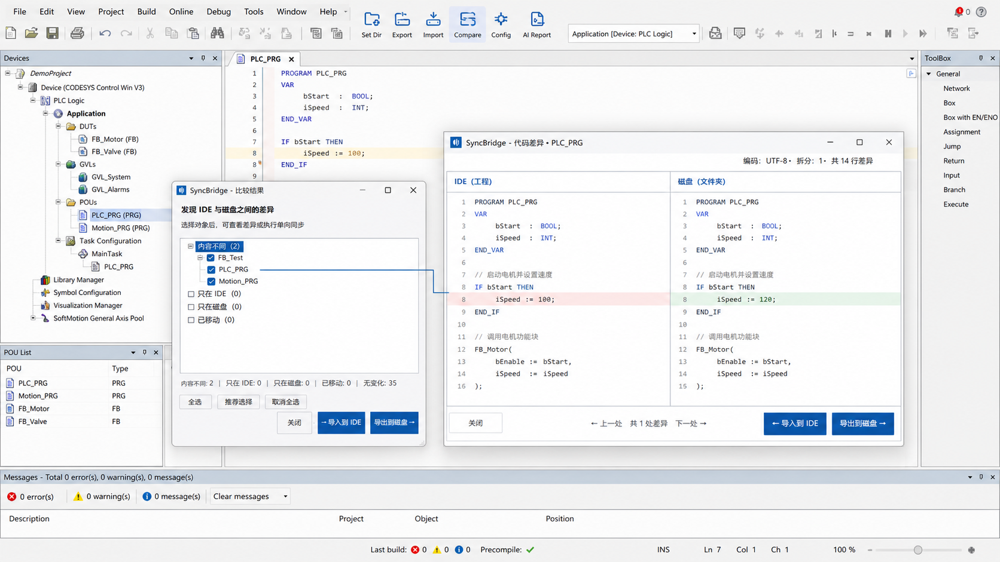
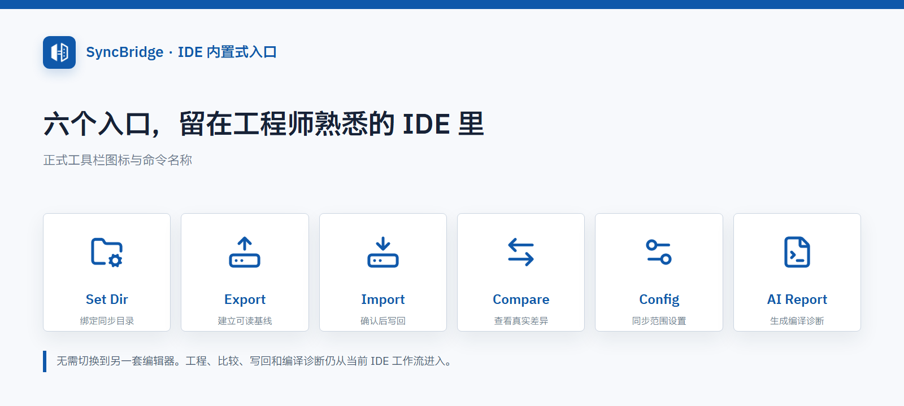
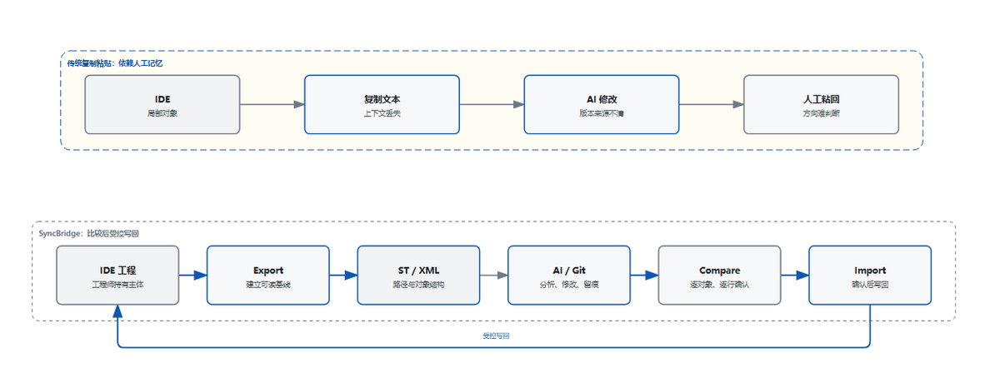
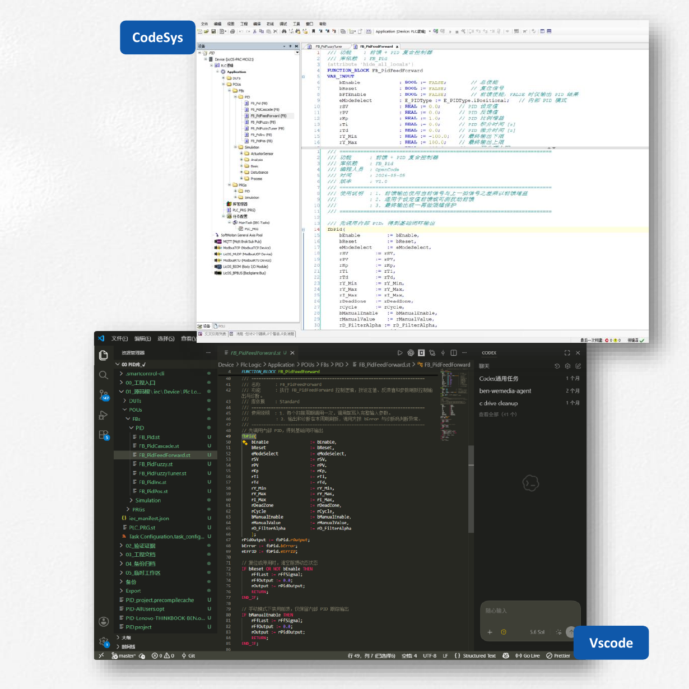
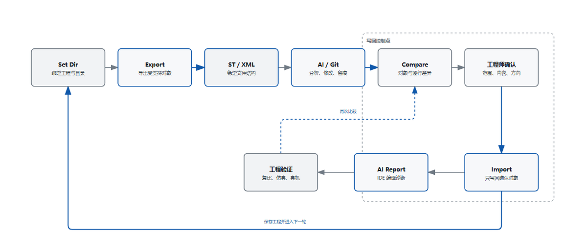
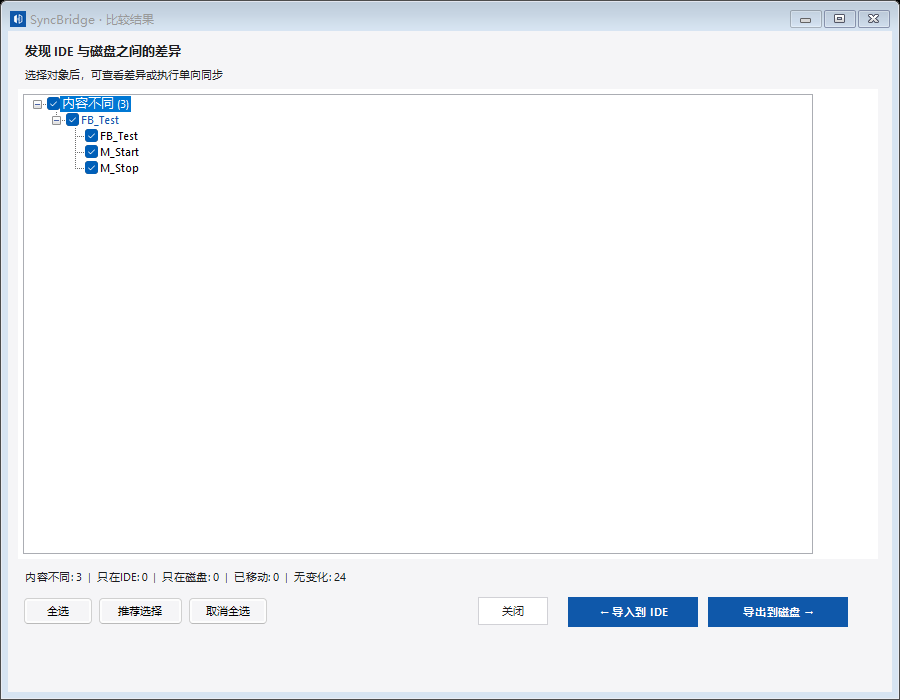
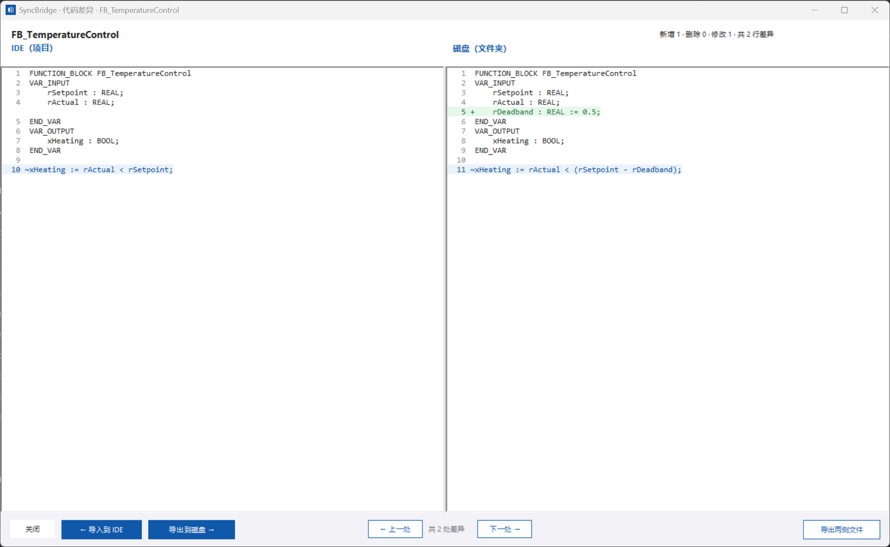
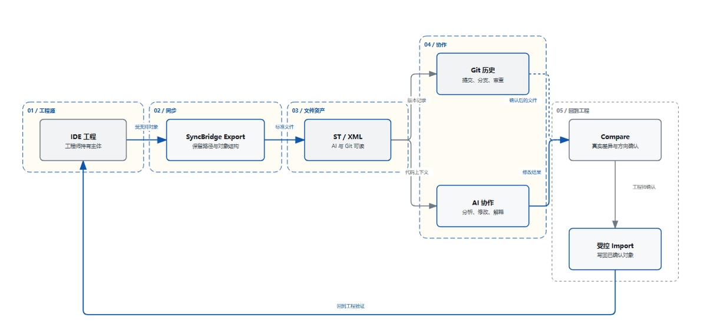
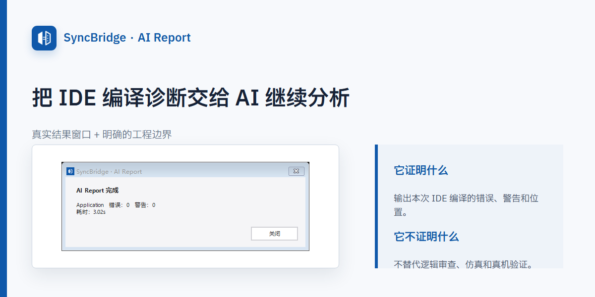
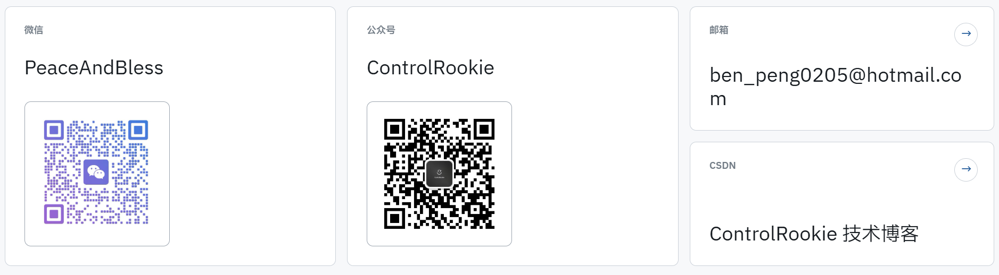

如果你已经开始让 AI 帮你编写 ST，真正棘手的问题往往不是代码能不能生成，而是这些修改怎样安全地回到 CODESYS 工程，写回以前又怎样确认对象、版本和每一行差异。
SyncBridge 给出的办法很直接：先把工程对象导出成 AI 和 Git 能读懂的文件，再通过 Compare 看清差异，最后只把工程师确认过的对象写回 IDE。
今天的大模型已经完全吃透了IEC 61131-3标准，所以 Structure Text 或者 SCL 这些自动化领域的文本编程语言对于 AI 来说已经是件非常容易的事情了。
算法、通信协议、状态机、功能块封装等这类问题，只要人具备把问题描述清楚的能力，AI 往往能极其高效地给出一个“令人惊叹”的结果。所以 AI 时代的工业自动化工程师用好 AI 似乎已经成为了不可逆的趋势和真理，后面有机会我会在其他篇幅中来仔细探讨一下这个问题，这里不做展开。真正让我不放心的，从来不是它能不能生成代码，而是另一件事：这段代码怎么安全、可控地进入工程？写回前，我能不能看清它改了什么？如果方向错了，谁来阻止它覆盖原来的对象？
工业工程不能只看代码片段。对象属于哪个工程、当前哪一边更新、修改涉及哪些行、编译是否通过、现场行为是否符合预期，这些都需要工程师判断。
所以，我做了 SyncBridge。
它不是一个根据一句提示词自动接管整个项目的系统，而是一个轻量级的 IDE 内置插件。它几乎兼容所有基于 CODESYS 进行二次开发的 IDE，把 IDE 中受支持的工程对象按照与项目树完全一致的层级结构导出成 AI 和 Git 能读懂的 ST/XML 文件，让工程师先看清差异，再决定是否写回。
我给它定下的原则只有三条：工程可读，差异可见，写回可控。

*图 1：SyncBridge 直接嵌入 CODESYS IDE。工程师可以先查看对象列表和逐行代码差异，再决定具体对象的同步方向。*

*图 2：六个正式工具栏入口。打开工程以后，设置目录、导出、比较、写回和编译诊断都可以从 IDE 内完成。*
AI 可以写 ST，但我不希望它直接接管工程
最早一批自动化工程师在尝试把 AI 用于自动化变成工作过程中，最常见的办法是复制粘贴。

*图 3：复制粘贴只搬运局部文本；SyncBridge 保留对象结构、比较基线和明确的写回方向。*
从 IDE 复制一段 ST，交给 AI 修改，再把结果粘回去。代码短、对象少、只改一次时，这个办法确实能用。但工程一大，问题很快就出现了：
- 当代码块数量较大时，来回复制粘贴除了本身低效以外，还额外增加了出错的成本。
- 经过几轮 IDE 和 .st文件代码修改后，已经完全搞不清到底哪边才是最新的版本，比如 AI 在磁盘文件中增加了一个死区参数，而 IDE 里同时还有工程师刚完成的调整，此时谁覆盖谁，不能由工具猜，更不能在后台静默完成。工程师必须先看到两边的真实差异，才能判断下一步，否则极易造成正确代码被覆盖，这是不可以接受的！
- 通过有限的提示词和功能块局部代码，AI 看到的是一段文本，不是完整工程上下文，它既不知道这段代码在工程树中的位置，也不知道同名对象来自哪个版本，因此容易陷入不管怎么调都没法达到我们的期望。
- 2026年 CODESYS 官方在 PDE(Professional Developer Edition) 组件中就推出了 CODESYS V3.5 MCP，采用订阅形式，但高昂的定价让本就“囊中羞涩”的自动化工程师望而却步； Github 上也有个人开发者发布的 MCP 工具，但以原子功能居多，虽然能够完成自动化地获取代码和写回，但这类工具优化明显不足、缺少工程师级的工作流，使用过程中根据模型能力表现不一，除了慢以外、Token消耗也是个人使用者面临的实际问题，毕竟都是真金白银！
基于上述的问题，我需要的不是一个绕过工程师、根据一句提示词直接重建项目的系统，而是一座能够“安全可控”地连接 IDE、AI 和 Git 的桥梁。

*图 4：上方是 CODESYS IDE 中的工程对象，下方是 VS Code 中按工程树导出的磁盘文件。AI 和 Git 处理标准文件，工程师仍在 IDE 中掌握最终写回。*
为什么它必须轻量，而且必须留在 IDE 里
虽然在 IT 领域，AI Coding 如今的能力、未来的潜力都令人震惊，因此鼓吹“哪种IT人员最有可能被淘汰”的论调和呼声一直很高。但在 OT、嵌入式这些领域，我坚信 AI Coding 还有很长的路要走、很多的问题要解决，这些问题可能不简简单单是技术问题。
因此，绝大多数的自动化工程师短期内每天工作的中心仍然是 IDE 为主的传统工作模式。工程树、库引用、编译、在线监控和设备调试都在那里。如果为了使用 AI，再搭建一套庞大的独立平台，工具本身就会成为新的负担。
SyncBridge 因此选择了另一条路：直接嵌入现有 IDE。
在受支持的 Windows 和 CODESYS IDE 环境中完成部署后，可以把六个入口直接放进工具栏：Set Dir、Export、Import、Compare、Config 和 AI Report。打开工程以后，工具就在手边，不需要改变工程主体，也不需要把日常工作迁移到另一套编辑器。
它很轻，几乎就是 IDE 原生内嵌的插件形式存在，理解成本极低，任何一个工程师立即就能上手使用。
它遵循的是工程师已经熟悉的比较习惯
CODESYS 工程师并不陌生“先比较，再决定怎么处理”。“工程比较” 这个功能本身就是一种很成熟的工程习惯：先把差异列出来，定位到对象和代码行，再判断哪一侧是正确来源。
SyncBridge 沿用的就是这套思路。
- 先确定工程对应的同步目录。
- 从 IDE 导出受支持的工程对象，建立基线。
- 让 AI 或 Git 只处理磁盘中的 ST/XML 文件。
- 回到 IDE 扫描磁盘与工程之间的差异。
- 查看具体对象和具体代码行。
- 由工程师确认修改方向。
- 只把确认过的对象写回 IDE。
- 保存、编译、再次比较，并继续仿真或真机验证。

*图 5：AI 和 Git 处理标准文件；真正写回工程之前，必须经过 Compare 和工程师确认。*
这套流程看起来没有“全自动”那么激进，但它更符合我对工业软件的理解：效率应该建立在可判断、可停止、可复核的基础上。
Compare 才是整个产品的核心
SyncBridge 真正重要的，不是“能不能把代码写回 IDE”，而是工程师在写回以前能不能清楚知道将要发生什么。
Compare 会把内容不同、只存在于 IDE、只存在于磁盘以及移动关系集中列出来。工程师可以先在对象列表中确认范围，再进入代码差异窗口逐行检查。

*图 6：Compare 先把差异对象集中列出。推荐选择只是检查起点，最终方向仍由工程师确认。*
比较过程中，换行符、BOM 等传输格式差异会被过滤，避免工程师被无意义噪声淹没。真正需要关注的是对象是否新增、删除或移动，变量和实现代码具体改了什么。

*图 7：左侧是 IDE 对象，右侧是磁盘文件。工程师能够看到新增参数和逻辑修改，再决定单项写回方向。*
Compare 本身只读。即使已经完成扫描和勾选，只要工程师没有执行方向明确的写入动作，两边内容都不会被修改。遇到不确定的差异，最合理的操作不是“试试看”，而是关闭窗口，先把来源查清楚。
SyncBridge 与完全自动化 MCP、CLI 的区别
MCP 和 CLI 并不是 SyncBridge 的对手，它们解决的是不同问题。
| 对比维度 | 完全自动化 MCP/CLI | SyncBridge |
|---|---|---|
| 主要目标 | 根据需求驱动自动化构建和批量处理 | 辅助现有工程开发和受控写回 |
| 操作入口 | 对话、命令行、接口或外部系统 | IDE 内置工具栏 |
| 自动化程度 | 更高，适合规则明确的标准任务 | 保留人工分析、比较和确认 |
| 差异检查 | 依赖自动流程和外部审查机制 | 写回前在 Compare 中逐对象检查 |
| 工程师角色 | 提出需求并审核最终结果 | 全程掌握对象、方向和写回动作 |
| 典型场景 | 自动生成、批处理、流水线任务 | 算法、功能块、协议和既有工程迭代 |
如果目标是输入完整需求，让系统自动创建目录、生成项目、修改文件并运行流水线，MCP 和 CLI 更合适。
SyncBridge 不解决“输入一句需求，自动交付整个工程”的问题。它更适合另一类工作：工程主体已经存在，自动化工程师希望借助 AI 完善一个算法、封装一个功能块、补齐一个通信协议，或者分析一套历史工程，然后按熟悉的工程流程把结果带回 IDE 验证。
它的优势不是自动化程度更高，而是把控制点摆在工程师看得见的位置。
一次典型的功能块修改是怎样完成的
假设工程里有一个温度控制功能块。原来的逻辑只有设定值和实际值比较，现在希望借助 AI 增加死区，避免输出在临界点附近频繁抖动。
我会先从 IDE 执行 Export。SyncBridge 按工程树结构把受支持对象导出到同步目录，AI 读取的是标准 ST 文件，不需要直接操作工程内部格式。
接下来，让 AI 分析现有接口，给出死区变量和控制逻辑。修改完成后，我可以先用 Git 查看文件历史，确认这次只改了目标功能块，没有夹带其他对象。
然后回到 IDE，执行 Compare。
在代码差异窗口里，我能看到磁盘一侧增加了 rDeadband，输出条件由简单比较改成了带死区的表达式。这时我才决定是否把磁盘版本写回 IDE。如果接口命名、数据类型或控制方向不符合工程规范，我会继续修改文件，而不是先写回再碰运气。
确认以后执行 Import，保存工程，再运行 AI Report。如果 IDE 给出编译错误或警告，报告会把位置和诊断信息整理成 AI 可读结果，便于继续修正。
但编译通过只说明这次 IDE 编译没有报错，不代表控制逻辑已经正确。死区取值是否合适、边界行为是否符合工艺要求，仍然要由工程师审查，并通过仿真或真机验证。
Git 让自动化工程代码真正成为可管理资产
过去很多自动化工程的版本管理，实际还是“工程文件加日期”和“最终版、最终版2”。这种方式可以保存文件，却很难回答三个问题：谁改了什么、为什么改、能不能准确退回去。
SyncBridge 导出的 ST/XML 文件可以直接进入 Git。提交记录能够保留修改时间、变更内容和说明；分支可以承载试验方案；代码审查可以围绕具体行展开。算法、功能块、工艺逻辑和标准框架，也能逐步从一次性的项目代码变成可复用的工程资产。

*图 8：SyncBridge 负责建立可读文件和受控写回通道，Git 负责版本历史，AI 负责辅助分析与修改。*
这也是我认为 SyncBridge 长期价值更大的地方。它不只是把一段代码拿给 AI，而是让自动化工程更自然地进入 IT 工程师已经验证多年的版本管理和协作方式。
为了避免错误写回，我主动限制了什么
工业工具不能只写“支持什么”，也必须说清楚“不会自动做什么”。
Export 会先在临时区域完成整体导出和检查，全部成功后才更新正式同步文件。失败或取消时，不会把半完成结果当成新的正式基线。
Import 之前会检查工作区身份、版本和 ST 结构，并为写回过程保留备份。它只处理工程师确认过的对象，不会在后台自动 Import，也不会绕过 Compare 替工程师猜测覆盖方向。

*图 9：AI Report 调用 IDE 编译并输出错误、警告和位置。它是诊断入口，不是逻辑正确证明。*
SyncBridge 也不承诺支持所有硬件节点、设备 XML 和第三方对象。Config 中的非 ST 对象同步默认关闭，只有确认对象类型和项目需求后才应启用。
这些限制并不是功能缺失，而是产品边界。AI 可以提高分析和编写效率，工具可以减少搬运和同步错误，但业务逻辑、库依赖、设备行为和现场结果仍然属于工程师的责任范围。
它适合谁，也不适合谁
如果你已经在使用 CODESYS 或兼容 IDE，希望让 AI 帮助完善算法、通信协议和功能块，同时又希望保留对象审查、写回方向和工程验证，SyncBridge 就是为这种工作方式设计的。
它也适合希望用 Git 管理 ST/XML 文件、分析历史工程、沉淀标准模块和企业工程规范的团队。
但如果你的目标是输入一句需求，就让系统自动创建并交付整个项目；或者希望工具跳过比较，直接覆盖工程；又或者希望 AI 代码不经编译、仿真和真机验证就进入现场，那么 SyncBridge 并不适合。
我希望它改变的，是工程协作方式
SyncBridge 不试图替代自动化工程师，也不试图重新做一套 IDE。
它做的事情很具体：把工程变成 AI 和 Git 能读懂的文件，把修改前后的真实差异放到工程师面前，再把确认过的内容写回原来的工程环境。
让重复搬运更少，让版本来源更清楚，让每一次写回都更可控。
这就是我做 SyncBridge 的原因。
如果你正在使用 CODESYS 或兼容 IDE，希望把 AI 和 Git 接入现有工程，可以通过 ControlRookie 官网 联系我。我们先确认 IDE 版本、工程类型和使用场景，再判断它是否适合你的工作流。
写在最后
SyncBridge 还有很多值得继续打磨的地方。我希望大家能够喜欢这个工具，也希望它能真正融入自动化工程师原本熟悉的开发习惯，而不是增加新的使用负担。
如果你已经在使用 SyncBridge，欢迎把实际使用中遇到的问题、不顺手的地方以及希望增加的能力告诉我。每一条来自真实工程的反馈，都会帮助我在下一阶段的迭代和升级中把它做得更稳定、更实用。

*微信：PeaceAndBless｜公众号：ControlRookie｜邮箱：ben_peng0205@hotmail.com｜CSDN：ControlRookie 技术博客*
评论区预留
这里先保留评论和回复结构，不接入第三方服务。后续统一决定登录、匿名、审核、反垃圾和静态站兼容策略。